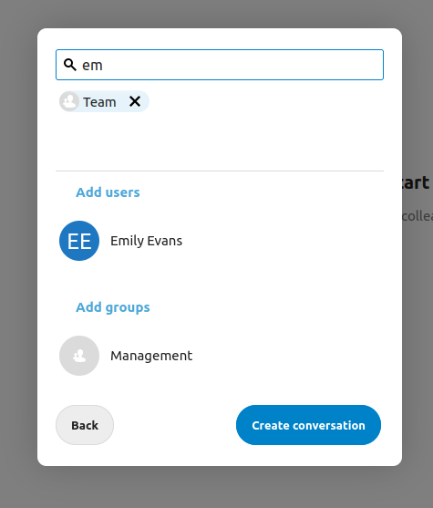
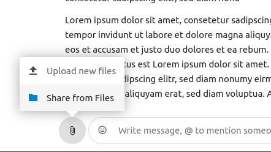

Nextcloud Talk Temelleri
Nextcloud Talk, kendi sunucunuzda sohbet etmenizi ve görüntülü çağrı yapmanızı sağlar.
Sohbetler ve çağrılar görüşmelerde gerçekleşir. İstediğiniz sayıda görüşme oluşturabilirsiniz. İki tür görüşme vardır:
Bire bir görüşmeler. Burası, başka bir Talk kullanıcısıyla özel sohbet ettiğiniz veya çağrı yaptığınız yerdir. Bu görüşmeye başka kişiler eklenemez veya bir bağlantıyla paylaşılamaz. Arama çubuğunda başka bir kullanıcıyı arayarak ve adına tıklayarak doğrudan bire bir sohbete başlayabilirsiniz.
Grup görüşmeleri. Bir grup görüşmesinde, görüşmeyi oluşturan kişinin yanı sıra herhangi bir sayıda kişi bulunabilir. Grup görüşmesi bir bağlantıyla herkese açık olarak paylaşılabilir, böylece dış konuk kullanıcılar bir çağrıya katılabilir. Ayrıca listelenebilir, böylece Nextcloud sunucunuzdaki diğer kişiler konuşmaya katılabilir.
Bir sohbet oluşturmak
Bir kullanıcının, grubun veya çevrenin adını arayarak ve üzerine tıklayarak doğrudan, bire bir sohbet oluşturabilirsiniz. Tek bir kullanıcı için anında bir görüşme oluşturulur ve sohbetinizi başlatabilirsiniz. Bir grup veya çevre için, görüşmeyi oluşturup katılımcıları eklemeden önce adı ve ayarları seçersiniz.

Özel bir grup görüşmesi oluşturmak istiyorsanız, arama alanının yanındaki artı düğmesine tıklayın. Ardından, görüşmeye bir ad verebilir ve görüşmenin dış kullanıcılara açık olup olmayacağı ile sunucudaki diğer kullanıcıların görüşmeyi görüp katılıp katılamayacağını seçebilirsiniz.

İkinci adımda, katılımcıları ekleyerek görüşmenin oluşturulmasını tamamlarsınız.
İstediğiniz zaman beyaz menü alanının dışına tıklayarak görüşme oluşturmayı iptal edebilirsiniz.

Bir sohbette dosyalar paylaşmak
Bir sohbette dosyaları 3 şekilde paylaşabilirsiniz.
İlk olarak, onları sürükleyip sohbette bırakabilirsiniz.

İkinci olarak, küçük ataç simgesini seçip dosyayı almak istediğiniz konumu belirterek Nextcloud Dosyalar uygulamasından veya bir dosya yöneticisinden seçebilirsiniz.

İşiniz bitene kadar daha fazla dosya ekleyebilir ve dosyaları paylaşmaya karar verebilirsiniz.

Kullanıcı hesapları olup olmadığına bakılmadan, tüm kullanıcılar dosyaları görüntülemek, düzenlemek veya indirmek için tıklayabilir. Dosya hesabı olan kullanıcılar ile otomatik olarak paylaşılır, dış konuk kullanıcılar ise bunları genel bir bağlantı paylaşımı olarak alır.

Emoji eklemek
Metin giriş alanının solundaki seçiciyi kullanarak emoji ekleyebilirsiniz.

İletileri yanıtlamak ve daha fazlası
Bir ileti üzerine geldiğinizde görüntülenen oku kullanarak bir iletiyi yanıtlayabilirsiniz.

... menüsünden özel olarak yanıtlamayı da seçebilirsiniz. Bu seçenek, bire bir sohbet açar.

Burada ayrıca iletiye doğrudan bir bağlantı oluşturabilir veya iletiyi okunmadı olarak işaretleyebilirsiniz. Böylece bir sonraki sohbete girdiğinizde o noktaya dönebilirsiniz. Bu bir dosya olduğunda, dosyayı Dosyalar uygulamasında görüntüleyebilirsiniz.
Bir görüşmeyi yönetmek
Yeni görüşmenizde her zaman sorumlu siz olursunuz. Sağdaki katılımcı listesinde, kullanıcı adlarının sağındaki ... menüsünü kullanarak diğer katılımcıları sorumlu yapabilir, özel izinler verebilir veya görüşmeden çıkarabilirsiniz.

Moderators can configure the conversation. Select Conversation settings from the gear menu of the conversation on the top to access the settings.

Buradan açıklamayı, konuk erişimini, görüşmenin sunucudaki diğer kişiler tarafından görülüp görülmeyeceğini ve diğer seçenekleri yapılandırabilirsiniz.

Bir çağrı başlatmak
Bir görüşmedeyken, Çağrı başlat düğmesiyle istediğiniz zaman çağrı başlatabilirsiniz. Diğer katılımcılar bilgilendirilir ve çağrıya katılabilir. Başka biri zaten bir çağrı başlattıysa, düğme yeşil bir Çağrıya katıl düğmesiyle değiştirilir.

Bir çağrı sırasında, üst çubuğun sağ tarafındaki düğmeleri ya da sesi kapatmak için M ve görüntüyü kapatmak için V kısayollarını kullanarak mikrofonunuzu ve kameranızı kapatabilirsiniz. Sesi kapatmak için boşluk çubuğunu da kullanabilirsiniz. Sesi kapattığınızda, boşluk tuşuna basmak sesi geçici olarak açar. Böylece boşluk çubuğunu bırakana kadar konuşabilirsiniz. Ses açıksa, boşluk tuşuna basmak, siz bırakana kadar sesi kapatır.
Görüntü akışının hemen üzerindeki küçük ok ile görüntünüzü gizleyebilirsiniz (ekran paylaşımı sırasında kullanışlıdır). Küçük okla yeniden geri getirebilirsiniz.
Üst çubuktakii ... menüsünden ayarlarınıza erişebilir ve farklı bir web kamerası, mikrofon ve diğer ayarları seçebilirsiniz.


Bir çağrıda görünümü değiştirmek
Bir çağrıda görünümü, sağ üstteki küçük dört bloklu simgeyle, yükseltilmiş görünüm ve ızgara görünümü arasında değiştirebilirsiniz. Izgara görünümünde herkes eşit büyüklükte gösterilir ve insanlar ekrana sığmıyorsa, gezinmenizi sağlayan sola ve sağa düğmeleri görüntülenir.

Yükseltilmiş görünüm, konuşmacıyı büyük ve diğerlerini aşağıda arka arkaya gösterir. Kişiler ekrana sığmıyorsa, gezinmenizi sağlayan sola ve sağa düğmeleri görüntülenir.